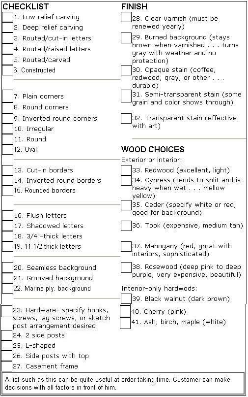

ADDENDUM TO:
In the "Installation Procedures" on page 78 of MOTHER NO. 37 I've outlined how to erect a sip manually. However, some signs can be too heavy or too tall to work with in this manner . . . in which case you'll need some additional mechanical help, perhaps in the form of a winch or a come-along. Such devices will enable you to take on a much larger sign than you can handle manually.
If, however, the installation job still staggers your imagination, get a crane. In most areas, cranes are available-with operator-for thirty-five dollars an hour. All travel time is included in the bill, though, so-depending upon how far the crane must trek to reach the installation site-a typical tab for such help can run from fifty to one hundred dollars. To avoid unnecessary overtime charges, be sure to do your site-preparation homework before such a piece of equipment arrives. If the crane has to wait around while you assemble the sign to its posts, you'll be billed for the delay . . . and that can run into lots a bucks.
Likewise, you may wish to send for a concrete truck to come and drop any "mud" you need into the appropriate postholes. The usual minimum order of concrete is one yard (that is, one cubic yard) and it's doubtful that you're gonna have any use for anywhere near that much. But you'll have to pay for the minimum anyway . . . about thirty dollars delivered. Here again, coordinate delivery of the concrete so that you'll be ready to pour when it arrives, because the driver's not going to sit around while you dig the holes.
Assembly of your sign to its supports will have to be done on the installation site, unless you have access to a flatbed truck or trailer large enough to transport the completely fabricated unit. If you're going to move the sign around much during transport or installation, it's a good idea to cradle or support it temporarily on 2 X 4's held in place by double headed nails (which are easy to remove after installation).
When you dig the postholes, place a straight 2 X 4 directly between the two excavations and check with a level to make sure you're measuring to the same depth for both holes. When the 2 X 4 is level, you're ready to slip a measuring tape down inside the holes and check their depths . . . which should, as mentioned, be the same.
Before you begin, take a saw or axe and shape the bottom end of each signpost into a point so that it can be wiggled into final position more easily.
When the sip is upright, have the crane-or your assistants-hold it in place while you "sight it up" by eye and with your level on at least two sides of each post. If the whole assembly isn't absolutely vertical both "fore and aft" and "left and right", throw a little dirt into the bottom of one of the holes. Then tilt and adjust the uprights using a sledge and a steel prybar until everything lines up straight. Next pound bracing stakes in deeply with a sledge, and nail supporting 2 X 4's between the signposts and the brace stakes. And, finally, double check to make sure everything is perfectly level and straight before you permanently spike the main uprights to their braces . . . many customers are very exacting in their demand for a level and square sign.
And while you're running checks on all the uprights, don't forget to run a level check on a few of the assembled sip's horizontal surfaces. If it has been constructed properly, using a builder's square-and if the foregoing procedures were followed-the sign will be rigid and square before and after final assembly and installation.
Avoid the use of flimsy sign components. Signposts that are made of two pieces nailed or glued together lengthwise I find particularly offensive. A joint in the middle of one of the main supports weakens the whole structure. The integrity of these uprights can be threatened also if you cut their notches too deep when fitting cross-members to them.
If the sign support structure is overbuilt to begin with, additional decorative thicknesses may be added to the posts, providing the cross sections of the main supports measure four inches by six inches or thicker.
If you intend to do very many installations, you should obtain a 50-pound (or heavier) steel bar with a pointed tip on one end. This implement can then be used to bust through most asphalt or concrete, should you run into such obstructions where you wish to dig your holes. (Special concrete-cutting bits may also be used to weaken the material . . . just drill several holes across the chunk you want to break off and then hit it with your steel bar.) Be certain that the concrete you're smashing is not a municipal water or drain pipe, and please, find out the location of all utility lines before you start your excavations. Even then, dig carefully to avoid breakage.
Incidentally, some locales require that you carry insurance to guard against any tragedy caused by your sign's collapse. This is worth looking into.
You won't-unless local ordinance requires-need to use concrete at all to secure your signposts if you sink the support posts to a depth equal to one-third the total length of the uprights. Of course, if the posts are to raise the sign ten feet above the ground and you use this rule of thumb, you'll need holes that are five feet deep. Obviously, such excavations are out of the question using a conventional posthole digger.
It's plain to see that the business of installing signs can turn into involved (and dirty) work. If you don't feel qualified, leave this or any other phase of the sign business to experts, or at least to someone with knowledge of the work to be done. If you do decide to do your own installations, charge plenty for it. Anywhere from one to two hundred dollars may be necessary, not counting the cost of the posts.
Something I should have stressed sufficiently before is the necessity for a well-organized and complete workshop. Here I'm talking about all the areas of the shop including wood supply, hardware, paint, and tools.
If you can afford it, lay in a good stock of the sizes and grades of wood you'll need most consistently. Frequently, you can get excellent buys if you offer your local lumberyard a lump-sum price on wood that's not selling. The dealer may be anxious to get the materials off his hands.
Good buys can also be had by watching the local paper or shopper. This applies to all tools and supplies. You'll find that running to the store every time you need a little wood, a brush, or a bolt will soon cost you more in gas and time than you could ever have imagined . . . not to mention the ton in annoyance. As soon as possible, try to establish an account with a wholesale lumber company. You'll have to purchase a considerable quantity of wood-two hundred dollars' worth, at least-but you'll find that wholesale lumber only costs about half of what your friendly retailer charges.
A well-organized shop eventually means good lighting, heating, and bench power tools at your disposal. Bench tools are fairly inexpensive if purchased used. If you buy anything "previously owned". be sure you can find a model number or other identification for ordering replacement parts before you hand over your dough. Also, be sure that the tool is in good repair.
Make the seller demonstrate the item and explain any irregularities to your satisfaction.
Is the machine heavy duty enough for your needs? A three-horse-power thickness planer (not a jointer-planer) can only remove the fuzz from a plank. To make the board perfectly smooth, it'll probably take two passes with this machine . . . in other words, twice the time.
The small table on the typical four-inch jointer/planer will probably prove too short to accommodate long boards without allowing the plank to fall down due to lack of support under its far end. You can remedy this if you add an accurately measured table extension-to hold up long boards-to the far end of the planer. However, if you had purchased a planer six inches wide or wider, you'd likely not need a table extension due to the longer table that comes with such a machine.
One tool that is truly wonderful is a band saw, and even a small one will do to begin with. It cuts with tremendous speed and accuracy-even when tracing intricate shapes-and is twice the machine that a heavy duty sabre saw is, if you use a sharp blade and read up on how to operate it. (Innumerable books have been written on this and other power tools . . . you'll find them extremely helpful.)
You'll find with time that these bench tools make you increasingly dependent upon them . . . and rightly so, as they are marvelously efficient machines.
The foregoing article and this addendum form a very thorough outline of the subject of wood sign building and carving. Only your experience will fill in the blanks, as it'd take a whole book-on which I'm working-to fully detail the processes involved in making a business of this type thrive. At any rate, though, this information should be sufficient to get you started . . . whether you want a full-scale sign-making enterprise, or just the opportunity to make a few simple nameplates, billboards, and professional shingles for yourself or your friends.
Under the subhead of "Gold Leaf" on page 79 of Issue No. 36, an obvious contradiction appears in the last sentence. The sentence should read: "Use a gold paint only if the customer insists, and then only after warning him."
In Fig. 12 of Issue No. 36, the caption under the illustration of the mallet should read: "Mallet for carving is usually made of extremely hard wood, such as lignum vitae."
|
An example of why the wood sign business is catching on. pleasing to the eye, highly decorative, and not plastic. |
|
 |